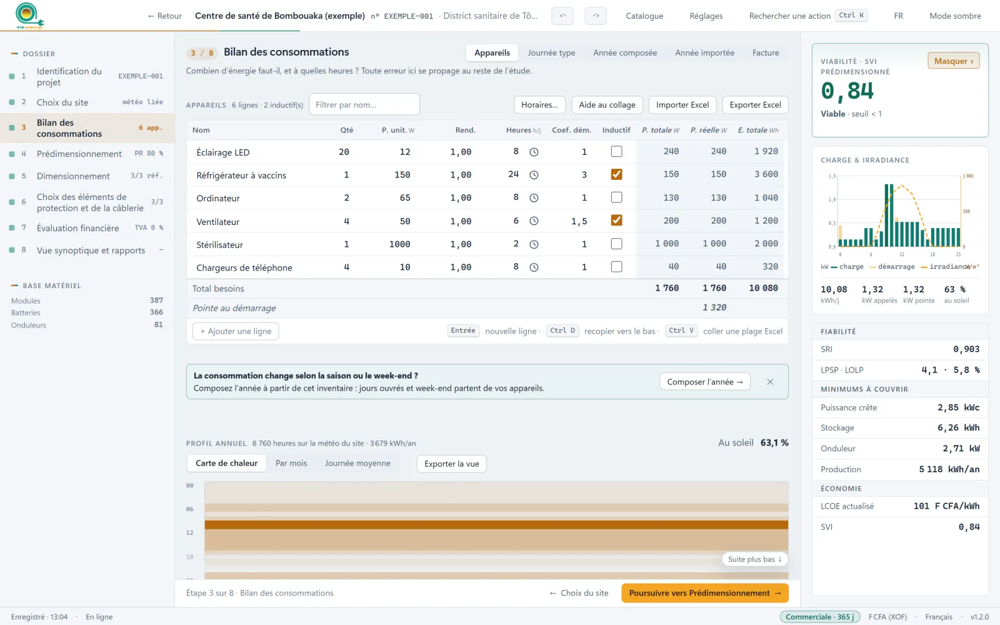
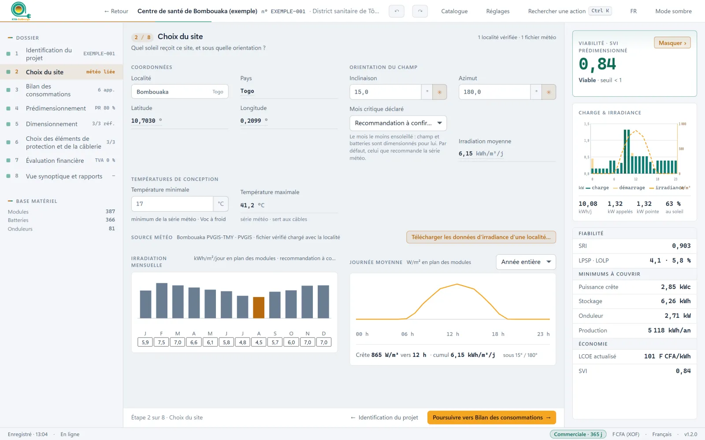

La météo du site, heure par heure
Coordonnées, orientation du champ, températures de conception. La série horaire PVGIS est vérifiée puis liée au projet ; le mois critique est recommandé.
Consommations, météo horaire du site, système minimal fiable, matériel choisi parmi vos références, protections selon l'IEC 60364-5-52, devis et rapport. Chaque étape nourrit la suivante.

Le projet exemple du logiciel : un centre de santé à Bombouaka, au Togo.
Coordonnées, orientation du champ, températures de conception. La série horaire PVGIS est vérifiée puis liée au projet ; le mois critique est recommandé.
Appareils, horaires peints à la souris, pointes au démarrage. Un jour type, une année composée de saisons et de week-ends, ou une année entière importée.
Le système minimal qui tient la fiabilité demandée (SRI), puis sa viabilité face au tarif réseau (SVI) et le coût du kWh sur sa durée de vie.
834 références livrées, les vôtres en plus. La combinaison la moins chère est simulée sur les 8 760 heures de l'année.
Chutes de tension, disjoncteurs, parafoudres et terre selon l'IEC 60364-5-52, repris dans la note de calcul.
Devis, facture proforma, schéma unifilaire et rapport en pages A4, en Word et en PDF.

Les vrais documents du projet exemple, tels que le logiciel les produit.


Un poste par licence. À l'échéance, vos projets restent consultables et imprimables : rien n'est effacé.
Mobile Money ou carte bancaire, par Semoa. La clé et la facture arrivent dans votre espace client.
| Fonction | Commerciale | Académique | Étudiant |
|---|---|---|---|
| Étude complète, du site au rapport PDF | |||
| Optimisation parmi vos références de matériel | — | ||
| Export Word des documents | — | ||
| Prix de vente et facture proforma | — | — | |
| Émission et révisions du dossier | — | ||
| Matériel ajouté au catalogue | — | ||
| Nombre de projets | Illimité | Illimité | 5 |
| Filigrane sur les documents | Aucun | Usage académique | Usage étudiant |
| Délai de grâce après l'échéance | 7 jours | 3 jours | Aucun |
| Durées proposées | 1 mois · 1 trimestre · 1 an | 1 an | 1 jour · 1 mois |
Éditions de licence et temps restant, rapport en vraies pages A4 avec sommaire, schéma unifilaire refait et exportable en PNG, mises à jour par canal, menu Fichier et Aide.
Tableau d'appareils unique et horaires peints, sources de consommation, optimisation sur vos références simulée sur l'année, émission et révisions du dossier, projet exemple.
Application de bureau, simulation horaire, protections et câbles selon l'IEC 60364-5-52, documents complets, interface bilingue.
| Système | Windows 10 ou 11, 64 bits |
|---|---|
| Installation | Installateur unique, aucune connexion nécessaire |
| Connexion | Facultative : météo PVGIS, activation, mises à jour |
| Langues | Français, anglais (interface et documents) |
| Données météo | Séries horaires PVGIS (TMY), vérifiées et liées au projet |
| Normes | Câbles et protections : IEC 60364-5-52 |
| Exports | PDF, Word, schéma en PNG et SVG, profils en Excel |
| Projets | Enregistrement automatique, fichier .ksd |
| Mises à jour | Automatiques et signées ; canal stable ou bêta |
Des rappels arrivent 30, 7 et 1 jour avant. Passé l'échéance et le délai de grâce de votre édition, le logiciel passe en lecture seule : vos projets restent consultables et imprimables, rien n'est effacé. Un renouvellement rend la main aussitôt.
Oui. Dans le logiciel, « Libérer ce poste » rend la licence disponible ; activez-la ensuite sur le nouvel ordinateur avec la même clé.
Non pour travailler. La connexion sert à télécharger la météo PVGIS, à activer et vérifier la licence, et à recevoir les mises à jour.
En ligne, par Mobile Money ou carte bancaire, via Semoa. La facture et la clé de licence sont disponibles dans votre espace client dès la confirmation du paiement.
Le logiciel les propose tout seul, avec leurs nouveautés ; l'installation se fait sans question et conserve vos projets.
Installez KYA-SolDesign, parcourez les huit étapes sur le centre de santé de Bombouaka, puis activez votre licence.